Rigid Plastics
Yes, please
No, thanks
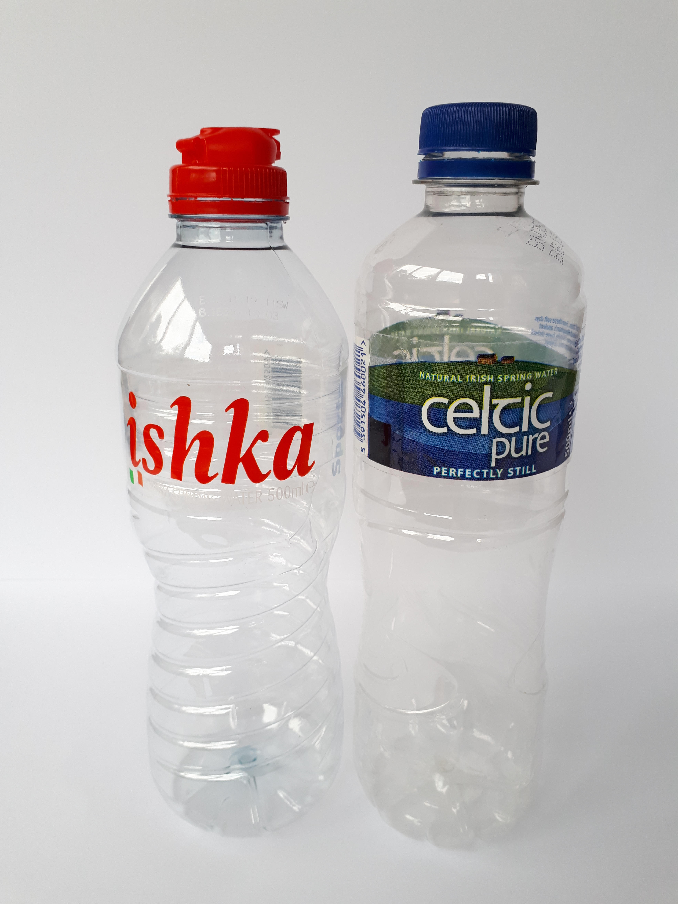
Plastic bottles are recyclable in household recycling bins but make sure they are empty and dry before recycling as otherwise they could contaminate your paper and cardboard recycling.
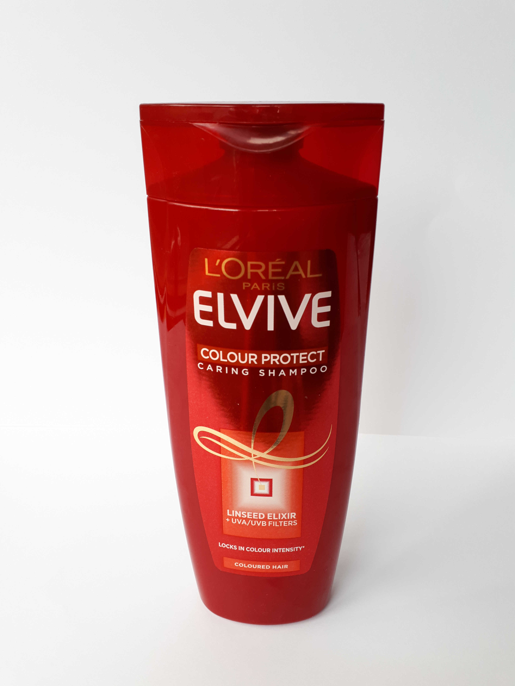
Shampoo bottles are recyclable in household recycling bins.
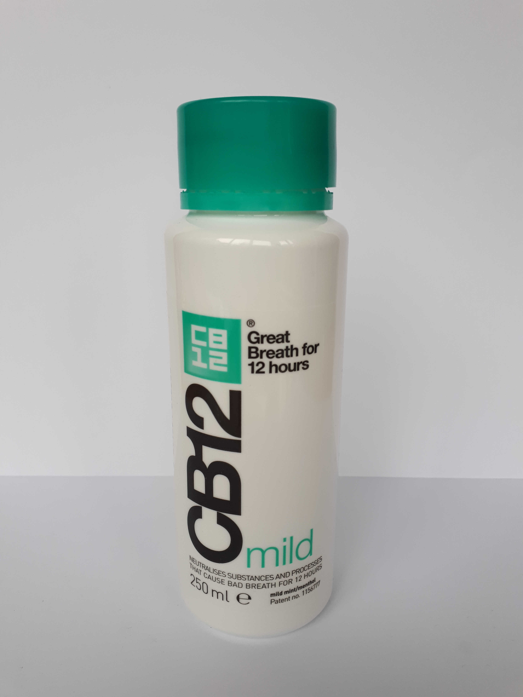
Mouthwash bottles are recyclable in household recycling bins.
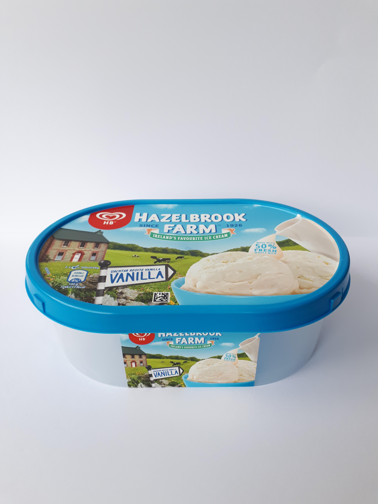
Rigid plastic containers, such as ice cream containers, are recyclable in household recycling bins. They will generally have a triangle symbol with PP 5 (Polypropylene) on them.
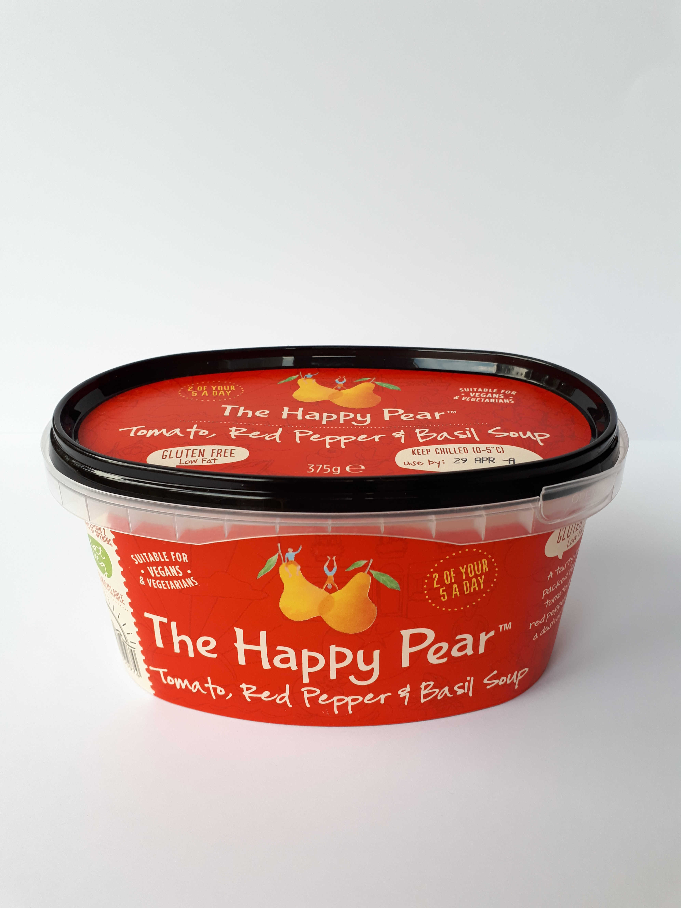
Rigid plastic containers, such as soup containers, are recyclable in household recycling bins. They will generally have a triangle symbol with PP 5 (Polypropylene) on them.
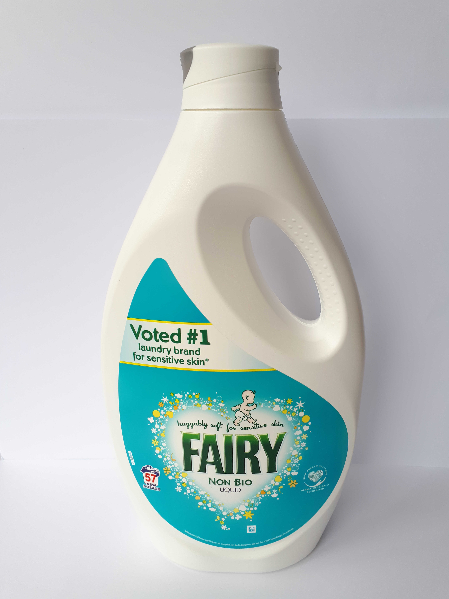
Detergent bottles are recyclable in household recycling bins. They will generally have a triangle symbol with HDPE 2 (High-Density Polyethylene) on them.
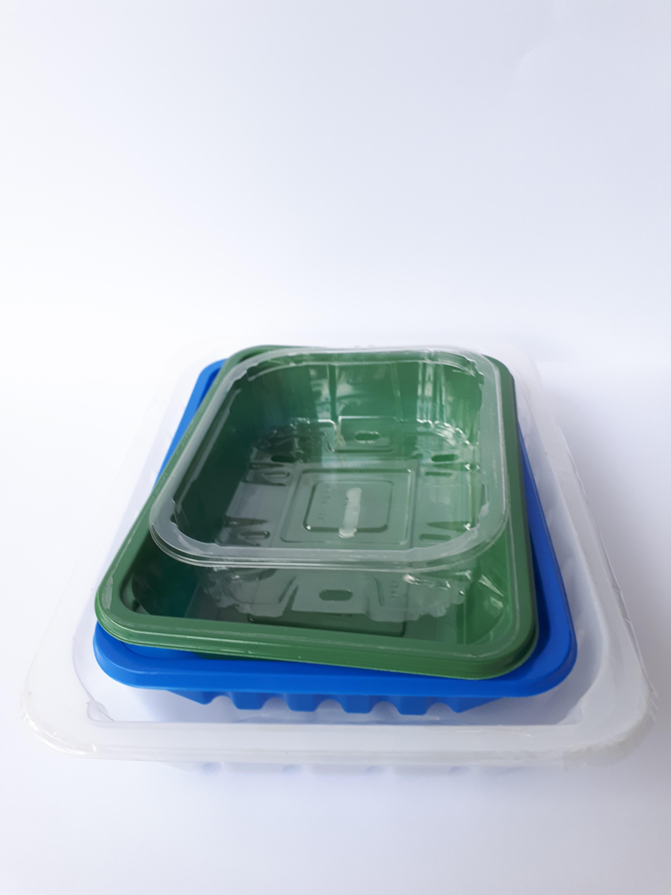
Rigid plastic trays such as mushroom, fruit and meat trays are recyclable in household recycling bins. They will generally have a triangle symbol with PET 1 (Polyethylene Terephthalate) or PP 5 (Polypropylene) on them.
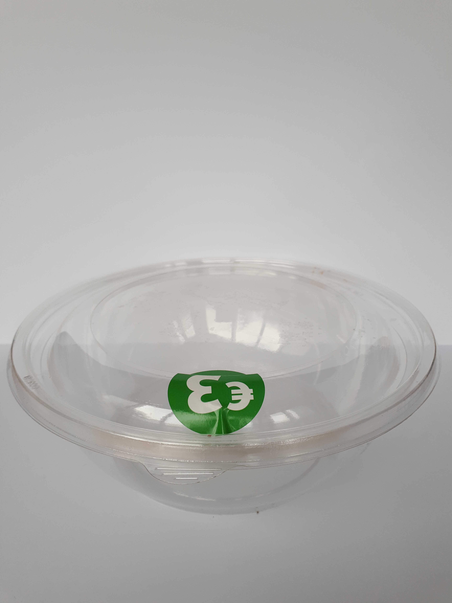
Salad boxes are recyclable in household recycling bins. They will generally have a triangle symbol with PET 1 (Polyethylene Terephthalate) on them.
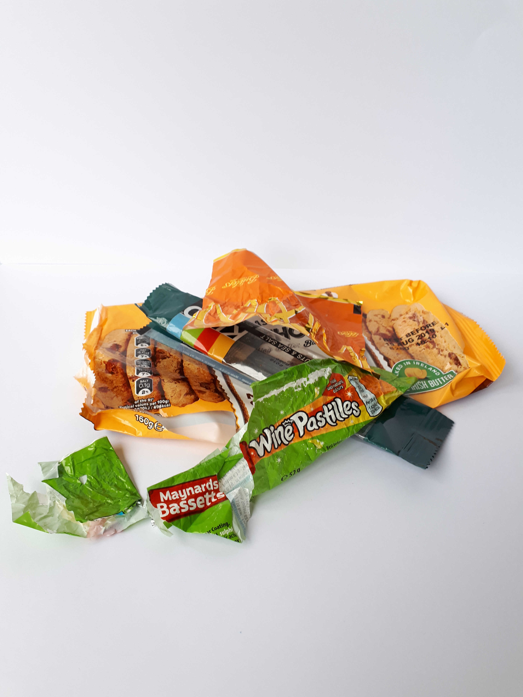
Sweet and biscuit wrappers are soft plastic and therefore not recyclable in household recycling bins. Generally, these wrappers are made of a mix of materials and it is too difficult to separate and recycle them.

Crisp packets are made of plastic on the outside and foil on the inside. It is too difficult to separate these materials and so crisp packets are not recyclable in household recycling bins.
However, check if the Terracycle Crisp Packet Recycling Scheme is available in your area.
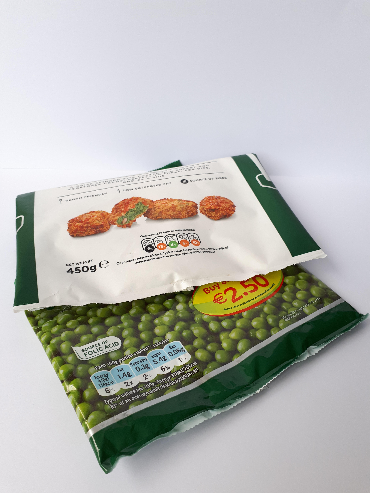
Frozen food bags are soft plastic and therefore not recyclable in household recycling bins.
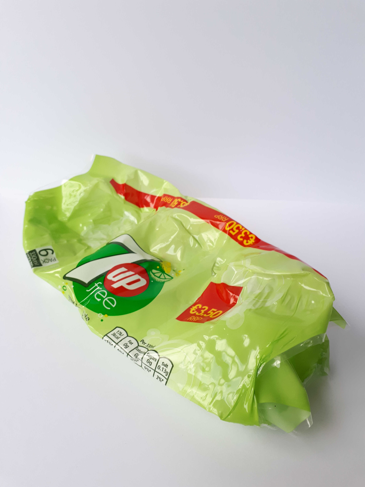
Plastic wrapping is soft plastic and therefore not recyclable in household recycling bins.
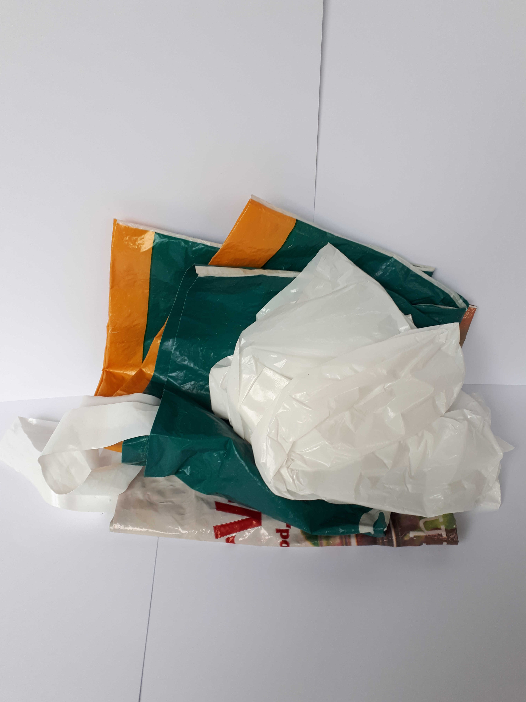
Plastic bags are soft plastic and therefore not recyclable in household recycling bins. In addition, plastic bags, plastic netting, and cling film can get caught in sorting machines.
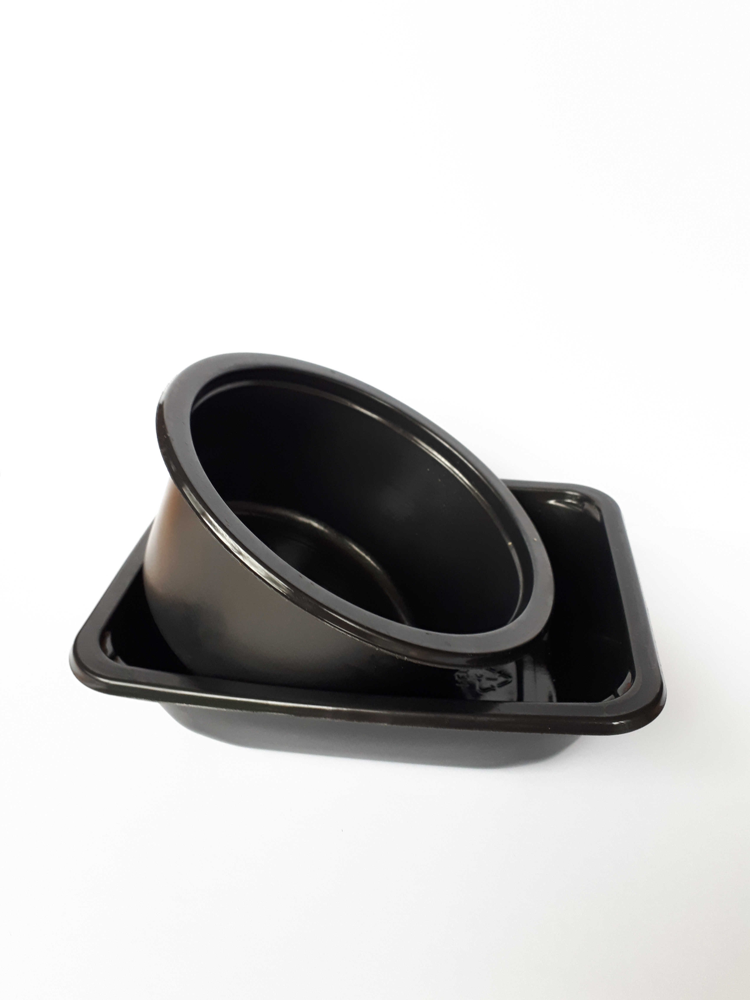
Black plastic is recyclable, but optical sensors can sometimes struggle to identify it on conveyor belts which means it cannot be separated from other waste.
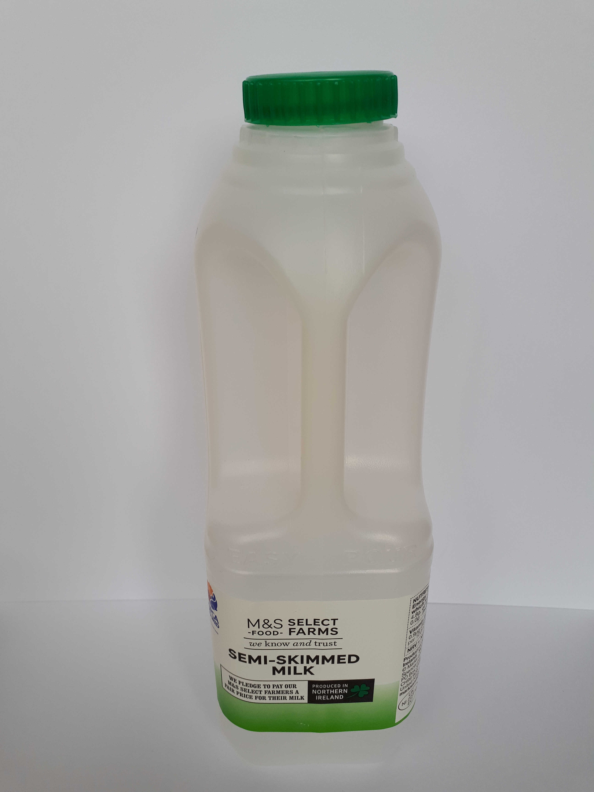
Plastic milk bottles are recyclable in household recycling bins. They will generally have a triangle symbol with HDPE 2 (High-Density Polyethylene) on them.